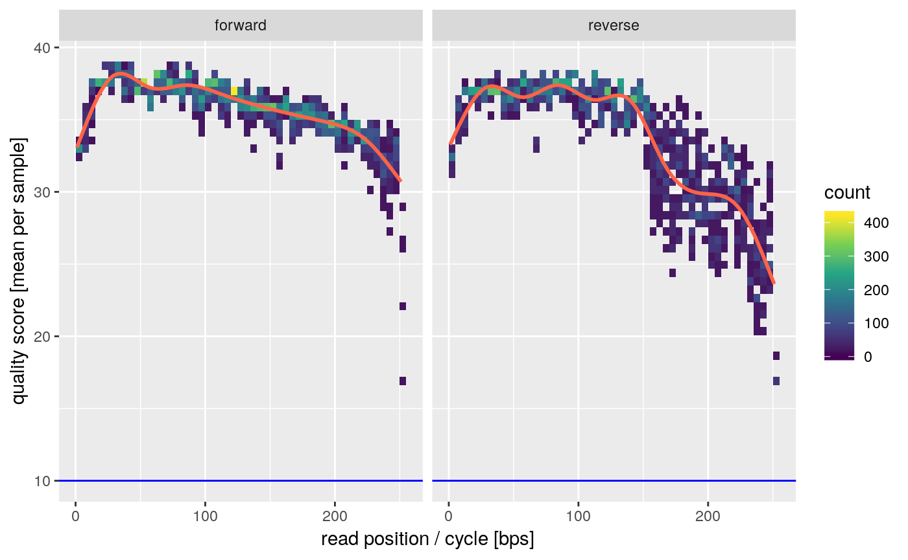
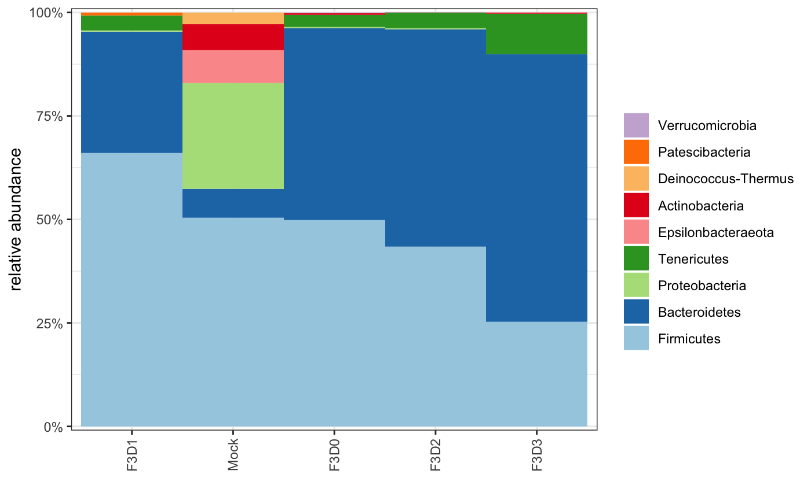

vignettes/amplicon_sequencing.Rmd
amplicon_sequencing.RmdWe can combine what we have seen in the quality assessment and preprocessing tutoarials with specific workflow steps for amplicon sequencing, for instance 16S rRNA gene sequencing.
As before we will load mbtools and use our example data:
## Loading mbtools## Also loading:## - dada2=1.10.1
## - data.table=1.12.0
## - ggplot2=3.1.0
## - magrittr=1.5
## - phyloseq=1.26.1
## - ShortRead=1.40.0
## - yaml=2.2.0## Found tools:## - bowtie2=2.3.4.3
## - minimap2=2.16-r922
## - slimm=0.3.4
## - samtools=1.9As before a good first step is to look at the qualities of the raw data.
## INFO [2019-03-08 13:14:20] Running quality assay for forward reads from 5 files.
## INFO [2019-03-08 13:14:22] Average per base error is 0.026% (mean score = 35.79).
## INFO [2019-03-08 13:14:22] Mean per cycle entropy is 0.809 (in [0, 2]).
## INFO [2019-03-08 13:14:22] On average we have 8963.80 +- 6059.73 reads per file.
## INFO [2019-03-08 13:14:23] Running quality assay for reverse reads from 5 files.
## INFO [2019-03-08 13:14:25] Average per base error is 0.043% (mean score = 33.69).
## INFO [2019-03-08 13:14:25] Mean per cycle entropy is 0.731 (in [0, 2]).
## INFO [2019-03-08 13:14:25] On average we have 8963.80 +- 6059.73 reads per file.## `geom_smooth()` using method = 'gam' and formula 'y ~ s(x, bs = "cs")'
Again we see that we might want to truncate the reads a bit on the 3’ ends to avoid the dip in quality. Depending on your amplified fragment make sure that this leaves sufficient overlap for merging (requires >20bp).
We can now perform our preprocessing and denoise workflow to obtain the amplicon sequence variants (ASVs) in our samples. We can chain our preprocessing and denoise workflows from our original quality assessment. For clarity we will define the confguration for the analysis on top.
config <- list(
preprocess = config_preprocess(
trimLeft = 10, # this is the default
trunLen = c(240, 200), # forward and reverse truncation
out_dir = tempdir() # will store filtered files in a temporary dir
),
denoise = config_denoise() # will only use defaults
)
denoised <- quals %>% preprocess(config$preprocess) %>% denoise(config$denoise)## INFO [2019-03-08 13:14:27] Preprocessing reads for 5 paired-end samples...
## INFO [2019-03-08 13:14:32] 3.23e+04/4.48e+04 (73.36%) reads passed preprocessing.
## INFO [2019-03-08 13:14:32] Running DADA2 on 1 run(s) from a sample of up to 2.5e+08 bases.
## INFO [2019-03-08 13:14:32] Learning errors for run `all` (5 samples)...
## INFO [2019-03-08 13:14:59] Dereplicating run `all` (5 samples)...
## INFO [2019-03-08 13:15:02] Inferring sequence variants for run `all`...
## INFO [2019-03-08 13:15:12] Finished run `all`.
## INFO [2019-03-08 13:15:12] Merged sequence tables, now removing chimeras...
## INFO [2019-03-08 13:15:12] Removed 5/164 sequence variants as chimeric (1.20% of reads)
## INFO [2019-03-08 13:15:12] Assigning taxonomy to 159 sequences...
## INFO [2019-03-08 13:15:12] Downloading taxa db to /var/folders/55/dv0p21y96g1cq84sr1zd3kym0000gr/T//RtmpcqOKTY/taxa.fna.gz...
## INFO [2019-03-08 13:16:29] Downloading taxa db to /var/folders/55/dv0p21y96g1cq84sr1zd3kym0000gr/T//RtmpcqOKTY/species.fna.gz...
## INFO [2019-03-08 13:21:00] Classified variants: Kingdom = 100%, Phylum = 100%, Class = 100%, Order = 100%, Family = 98.7%, Genus = 66.7%, Species = 8.2%
## INFO [2019-03-08 13:21:00] Hashing 159 sequence variants.This will run both workflow steps sequentially and will use all available CPUs by default. You will get some disgnostic output on the logging interface but you can also inspect those in the returned artifact.
For instance to see how many reads were conserved in each processing step:
We see that most samples were conserved (as reported in the logging).
The abundance of each sequence variant is saved in denoised$feature_tables which contains abundances for samples x ASVs. The ASVs here have been named by their md5 hash value and you can get the taxonomy and original sequence from denoised$taxonomy:
## Kingdom
## "Bacteria"
## Phylum
## "Bacteroidetes"
## Class
## "Bacteroidia"
## Order
## "Bacteroidales"
## Family
## "Muribaculaceae"
## Genus
## NA
## Species
## NA
## sequence
## "ACGGAGGATGCGAGCGTTATCCGGATTTATTGGGTTTAAAGGGTGCGCAGGCGGAAGATCAAGTCAGCGGTAAAATTGAGAGGCTCAACCTCTTCGAGCCGTTGAAACTGGTTTTCTTGAGTGAGCGAGAAGTATGCGGAATGCGTGGTGTAGCGGTGAAATGCATAGATATCACGCAGAACTCCGATTGCGAAGGCAGCATACCGGCGCTCAACTGACGCTCATGCACGAAAGTGTGGGTATCGAACAG"To see all steps run to obatin that output you can check the provenance:
## [1] "quality_control" "preprocess" "denoise"The denoise workflow step supports multiple sequencing runs in the same experiment. This requires that your files data table has a “run” column. If you sequencing files are organized such that every subfolder is a run you can simply use find_read_files(path, dirs_are_runs = TRUE). Otherwise, you have to specify the run by hand. We will do so for our files here:
## forward
## 1: /Users/cdiener/code/mbtools/inst/extdata/example/F3D0_S188_L001_R1_001.fastq.gz
## 2: /Users/cdiener/code/mbtools/inst/extdata/example/F3D1_S189_L001_R1_001.fastq.gz
## 3: /Users/cdiener/code/mbtools/inst/extdata/example/F3D2_S190_L001_R1_001.fastq.gz
## 4: /Users/cdiener/code/mbtools/inst/extdata/example/F3D3_S191_L001_R1_001.fastq.gz
## 5: /Users/cdiener/code/mbtools/inst/extdata/example/Mock_S280_L001_R1_001.fastq.gz
## reverse
## 1: /Users/cdiener/code/mbtools/inst/extdata/example/F3D0_S188_L001_R2_001.fastq.gz
## 2: /Users/cdiener/code/mbtools/inst/extdata/example/F3D1_S189_L001_R2_001.fastq.gz
## 3: /Users/cdiener/code/mbtools/inst/extdata/example/F3D2_S190_L001_R2_001.fastq.gz
## 4: /Users/cdiener/code/mbtools/inst/extdata/example/F3D3_S191_L001_R2_001.fastq.gz
## 5: /Users/cdiener/code/mbtools/inst/extdata/example/Mock_S280_L001_R2_001.fastq.gz
## id injection_order lane run
## 1: F3D0 188 1 1
## 2: F3D1 189 1 1
## 3: F3D2 190 1 2
## 4: F3D3 191 1 2
## 5: Mock 280 1 3Rerunning the previous workflow with this file list will now give a slightly different output:
## Loading mbtools## INFO [2019-03-08 13:21:03] Preprocessing reads for 5 paired-end samples...
## INFO [2019-03-08 13:21:08] 3.23e+04/4.48e+04 (73.36%) reads passed preprocessing.
## INFO [2019-03-08 13:21:08] Running DADA2 on 3 run(s) from a sample of up to 2.5e+08 bases.
## INFO [2019-03-08 13:21:08] Learning errors for run `1` (2 samples)...
## INFO [2019-03-08 13:21:21] Dereplicating run `1` (2 samples)...
## INFO [2019-03-08 13:21:22] Inferring sequence variants for run `1`...
## INFO [2019-03-08 13:21:26] Finished run `1`.
## INFO [2019-03-08 13:21:26] Learning errors for run `2` (2 samples)...
## INFO [2019-03-08 13:21:42] Dereplicating run `2` (2 samples)...
## INFO [2019-03-08 13:21:43] Inferring sequence variants for run `2`...
## INFO [2019-03-08 13:21:49] Finished run `2`.
## INFO [2019-03-08 13:21:49] Learning errors for run `3` (1 samples)...
## INFO [2019-03-08 13:21:50] Dereplicating run `3` (1 samples)...
## INFO [2019-03-08 13:21:50] Inferring sequence variants for run `3`...
## INFO [2019-03-08 13:21:51] Finished run `3`.
## INFO [2019-03-08 13:21:51] Merged sequence tables, now removing chimeras...
## INFO [2019-03-08 13:21:51] Removed 5/162 sequence variants as chimeric (1.20% of reads)
## INFO [2019-03-08 13:21:51] Assigning taxonomy to 157 sequences...
## INFO [2019-03-08 13:21:51] Downloading taxa db to /var/folders/55/dv0p21y96g1cq84sr1zd3kym0000gr/T//RtmpcqOKTY/taxa.fna.gz...
## INFO [2019-03-08 13:23:41] Downloading taxa db to /var/folders/55/dv0p21y96g1cq84sr1zd3kym0000gr/T//RtmpcqOKTY/species.fna.gz...
## INFO [2019-03-08 13:27:21] Classified variants: Kingdom = 100%, Phylum = 100%, Class = 100%, Order = 100%, Family = 98.7%, Genus = 65.6%, Species = 8.3%
## INFO [2019-03-08 13:27:21] Hashing 157 sequence variants.Error profiles will now be estimated for each run individually and final tables will be merged at the end. This is slower than having all files in one run so you should always try to distribute your samples across as few sequencing runs as possible.
For all further analyses you might want to work with a data type which is more suited for amplicon abundance data. You can directly obtain a phyloseq object with
It is possible to pass in metadata as a data frame with to_phyloseq(object, metadata = df).
You can now use all additional functions from mbtools on that. For instance we can get the ASV counts in a tidy data table:
## sample taxa reads species
## 1: Mock c69a3db92e1dcdebb01dfaa5b5795559 0 <NA>
## 2: Mock c6d91507bb3825befa2f3aa9c7631ac5 0 <NA>
## 3: Mock 81a461aaeb070ec0d623dd828322a7ad 0 Alistipes NA
## 4: Mock 0a98021c7909137422f0417bdf82250e 0 <NA>
## 5: Mock adcedd4ffc4b4d4554d920a7ea1ab935 0 <NA>
## ---
## 153: Mock e706eefe517d197c30cc503de74f7741 0 GCA-900066225 NA
## 154: Mock 5d4e5c3d9eee3918b6d4a300e4ed3e6c 0 <NA>
## 155: Mock d49f2ec46e108728c7f0e387ab139336 0 <NA>
## 156: Mock 31fa7eed69f8fd4b4e65076051f4e044 0 <NA>
## 157: Mock 4233dee7fda3b32a9f712023ded9973b 0 <NA>Here we see that we have identified that there are 20 ASVs in the Mock sample which is the exact number of strains in that sample.
We could also plot the phyla distribution across the samples:
## Warning in `[.data.table`(counts, , `:=`(id, as.numeric(sample))):
## Invalid .internal.selfref detected and fixed by taking a (shallow) copy
## of the data.table so that := can add this new column by reference. At
## an earlier point, this data.table has been copied by R (or was created
## manually using structure() or similar). Avoid key<-, names<- and attr<-
## which in R currently (and oddly) may copy the whole data.table. Use set*
## syntax instead to avoid copying: ?set, ?setnames and ?setattr. If this
## message doesn't help, please report your use case to the data.table issue
## tracker so the root cause can be fixed or this message improved.